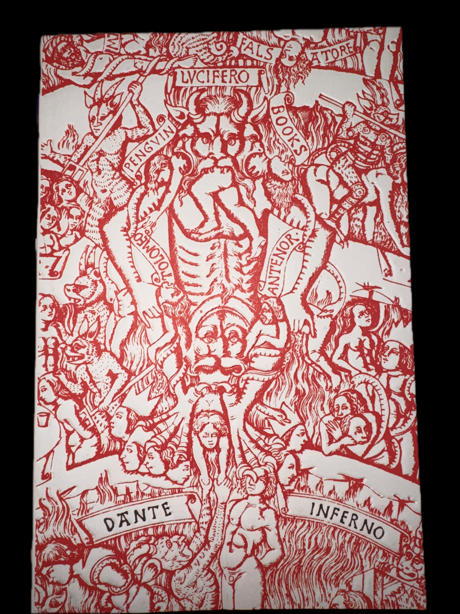

Your First Essay
Begin here. Write what you actually think — not what sounds correct, but what survives honest scrutiny. The essay is a form of thinking aloud.
Read →On knowledge, contemplation & the affairs of life
I am a builder of things and a seeker of ideas — drawn equally to the rigour of a well-reasoned argument and the quiet satisfaction of work done without an audience. I believe the examined life is the only kind worth living, and that most things worth knowing arrive slowly.
"Waste no more time arguing about what a good man should be. Be one." — Marcus Aurelius, Meditations
Knowledge — writings & essays
What follows are attempts to think clearly about things that resist it. Written not to persuade, but to understand.
Contemplation — literature & reading
A record of texts that have occupied my attention — some finished, some ongoing, some merely intended. Each one a small commitment.
Written for no one but himself, yet it outlasted the empire he commanded. Each entry a small battle against distraction and vanity.

A descent through Hell as a journey toward understanding. The damned are not punished arbitrarily — each soul inhabits the logical conclusion of the life it chose.
A short handbook for living. Its brevity is the point.
Why does it sit on your list? What draws you to it?
Affairs — what occupies me now
The present tense. What I am building, thinking about, or moving through at this particular moment in time.
Describe something you are currently working on — a project, a habit, a discipline.
A question or idea that keeps returning. Something unresolved that you find yourself circling.
A small observation from recent life. Something noticed, something changed, something begun.